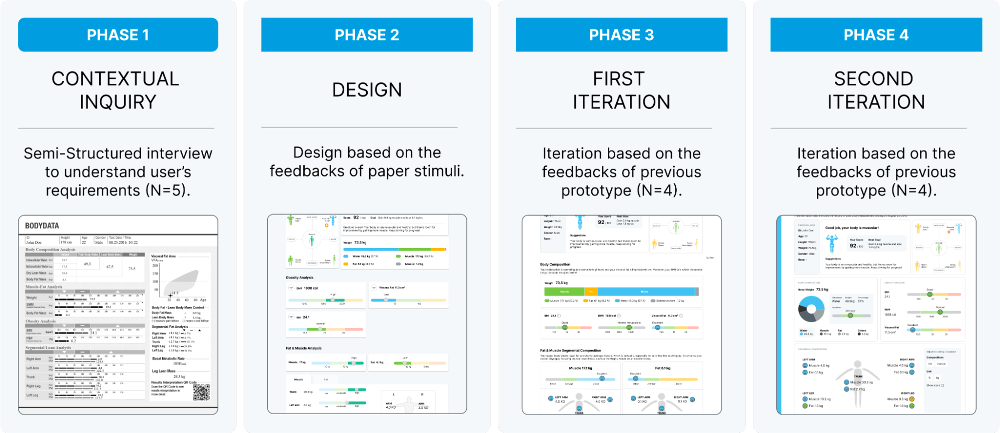

Problem Statement: The Challenge of Traditional Result Sheets
Paper body measurements represented as static data are a way to communicate personalised body composition data to the public. Individuals receive these paper-based result sheets after their measurements, but due to the lack of interactivity and the medium type, they often need to scan a QR code for additional information, which leads to inconvenience. The uncertainties about evaluating the understanding of the information still remain. It remains unclear how recipients struggle to interpret the data on these sheets, including numerical statistics.
Solution: Introducing the User-Friendly Online Platform
To address this challenge, interactive platforms may provide a digital interface that enables users to actively explore information, which may serve as a helpful way for understanding body composition data. In this project, I developed an online interactive platform that simplifies the process of understanding body data, and my goal is to provide an effective and user-friendly experience for understanding one’s body data.
Design Process
In designing an interactive platform, prioritizing user experience is paramount. Managing cognitive load through simplification, elimination of irrelevant data, and visual cues is key to ensuring ease of use. Balancing verbatim and gist representations is essential, with a focus on facilitating understanding of the overall meaning. Personalized exploration options should be provided, while maintaining clarity and simplicity throughout the platform.
Phase 1: Understanding User Needs with current paper-based form
This phase involves qualitative usability testing to gain insights into users' interactions with the paper-based body measurement sheet. Semi-structured interviews are conducted to explore users' comprehension and identify challenges they face. Participants, mostly male due to scheduling constraints, provide feedback on their interpretation of the data, which is based on the Inbody 770 result sheet. The redesign process focuses on tailoring relevant body composition information while excluding unnecessary details.
Qualitative usability testing was conducted to understand user interactions with the paper-based body measurement sheet. Semi-structured interviews revealed varied interpretations and challenges, including unclear terms and lack of clarity. Suggestions for improvement include color coding, clear explanations, and consistency maintenance to enhance visual understanding and comprehension.
Phase 2: Design
During the design phase, improvements were made to enhance both verbatim and gist understandings of the datasheet. To simplify verbatim understanding, unnecessary values and scales were removed, and color scales were implemented. References for user data and health scores were added, along with an icon graph depicting body shape for gist memorization. Visual aids and descriptions, including brief explanations of terms and emotional color scales, were incorporated. Charts were redesigned for easier interpretation, and redundant material was eliminated to reduce cognitive load. The interactive prototype developed in Figma aimed to address these issues and enhance user understanding and experience.
Phase 3: The first Iteration
In Phase 3, participants offered valuable feedback to enhance the interactive prototype's usability, focusing on interface and information design. Interface issues included inconsistent color schemes and confusion about indicator functionality, prompting suggestions for standardizing colors and clarifying indicator purposes. Information design concerns centered on unclear guidance and unfamiliar terms, leading to improvements in wording and the addition of easy-to-understand labels. To address these, verbatim search speed and readability were improved, and information was categorized into layers for clarity. Colour scale design was adjusted for consistency and guidance, while interaction design changes aligned with Google Material Design standards. These updates aimed to make information more accessible, understandable, and visually appealing for users.
Phase 4: Second Iteration
In Phase 4, the interactive prototype underwent improvements based on user feedback to enhance usability. Participants noted enhancements in understanding, especially regarding health status, and found visual aids helpful. However, suggestions for improvement included using pie charts, providing detailed hover information, explaining scoring systems, and better layout organization. In response, the prototype was adjusted for a more compact dashboard layout, incorporating a sidebar for details and transforming the bar chart into a pie chart. Interactive features were added for personalized viewing, ensuring a user-centric experience and improved usability.